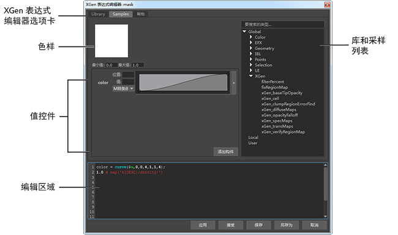
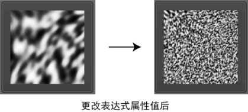
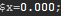
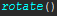
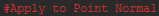
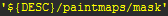
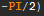

使用“XGen 表达式编辑器”(XGen Expression Editor)创建新的表达式或将保存的 XGen 表达式应用到描述。若要打开“XGen 表达式编辑器”(XGen Expression Editor)，请单击“XGen 编辑器”(XGen Editor)中属性旁的  图标。您可以打开编辑器的多个实例。
图标。您可以打开编辑器的多个实例。
“XGen 表达式编辑器”(XGen Expression Editor)具有以下主要区域：

“XGen 表达式编辑器”(XGen Expression Editor)选项卡
单击“库”(Library)以显示用户保存的表达式，或单击“示例”(Samples)以显示 Maya 附带的表达式。从列表中选择一个表达式，以将其添加到表达式编辑区域。
默认情况下，“库”(Library)和“采样”(Samples)文件夹位于以下位置：
C:\Program Files\Autodesk\Maya2016.5\plug-ins\xgen\presets\expressions\
提示： 您可以添加用来在“XGen 表达式编辑器”(XGen Expression Editor)中组织表达式的选项卡，方法是在 XGen 配置的 global、local 和 user 目录中创建新的子目录（请参见指定用户、本地和全局文件储存库的位置）。
样例
样例通过显示以下内容，提供有关表达式执行方式的反馈：
- 表达式无法求值时为红色。单击样例以显示表达式错误。
- 有关表达式如何修改值的视觉表达。例如，该样例将显示噪波表达式生成的图案。单击样例将更新显示。如果表达式使用滑块控件来控制输入值，当您更改这些值时，显示将自动更新。

值控件
在表达式中声明局部变量时，XGen 将滑块控件添加到编辑器。
单击“添加构件”(Add Widget)，将以下值控件添加到表达式：
- “曲线”(Curve)允许在表达式中使用值渐变来调整表达式的值或组成部分。该渐变类似于 Maya 中使用的其他值渐变。
- “颜色曲线”(Color Curve)允许使用颜色渐变通过颜色变化生成值。使用此渐变可根据源于输入的值指定颜色。
- “整型”(Int)、“浮点型”(Float)和“向量”(Vector)为默认值以及用户定义的最小和最大值范围创建滑块控件。
- “颜色”(Color)将为颜色选择创建颜色样例。
请参见使用表达式控制基本体。
编辑区域
使用编辑区域来创建、修改和显示在表达式中使用的所有元素。
提示： 若要更改字体大小，请选择表达式编辑区域，然后在按住 Ctrl 键的同时使用鼠标中间的滚轮进行滚动。
“XGen 表达式编辑器”(XGen Expression Editor)提供如下所述的语法功能：
- 使用以下颜色约定的亮显语法：
表达式组件 文本颜色 示例 局部变量和数字值 白色  全局变量 绿色 函数 青色  参数定义和注释 红色  文件路径和字符串 黄色  常量 橙色  - 函数、变量和常量的文本自动完成。在编辑区域中输入内容时，提示将显示可能元素的列表以及描述。
对于函数，将光标放置在圆括号中，以显示有关接受的参数的信息。
执行和保存
- 应用(Apply)和接受(Accept)
-
检查语法、执行表达式并更新描述预览。执行表达式后，选择“接受”(Accept)还将关闭“XGen 表达式编辑器”(XGen Expression Editor)。
注： 若要在执行表达式时更新描述，必须启用“自动更新描述”(Update Description Automatically)。 - “保存”(Save)和“另存为”(Save As)
- 将当前表达式保存为 seExpr (.se) 文件。默认情况下，Maya 会将表达式保存到 <用户名>\documents\xgen\expressions 目录下。
保存到此位置的表达式可以从编辑器的“库”(Library)选项卡上的“用户”(User)列表进行选择。